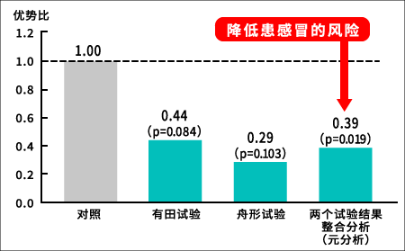
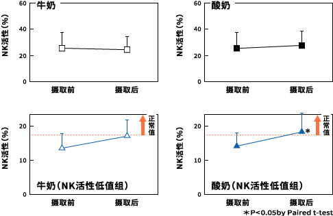
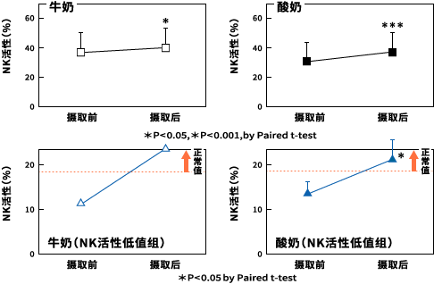

乳酸菌1073R-1株 实验结果(1)
使用乳酸菌1073R-1株在山形和佐贺实施的酸奶人体实验结果表明，
罹患感冒的风险降低，NK活性增强。
以居住在山形县舟形町的57位70-80岁的健康老人，以及居住在佐贺县有田町的85位60岁以上健康老人为对象，实施调查乳酸菌对免疫系统的作用。两个地区均分为两组进行调查。一组使用由乳酸菌1073R-1株制成的酸奶，每天食用90克。另一组则每天喝100毫升的牛奶。在舟形町持续实验8周，有田町持续实验12周，然后比较身体状况和免疫情况的变化。其结果，无论在哪个地区，食用由乳酸菌1073R-1株制成的酸奶人群，随年龄增长而降低的T细胞繁殖能力，获得有统计学意义的显著上升（※1）。另外，食用由乳酸菌1073R-1株制成的酸奶人群，无论在哪个地区，在食用前NK活性较低的人群中，其活性明显上升。此外，还确认到罹患感冒的风险降低。如把喝牛奶组的感冒风险作为1，那么食用了由乳酸菌1073R-1株制成的酸奶人群，在有田町为0.44，在舟形町则为0.29，将两个地区的数据进行综合分析后，得到的结论为0.39，也就是说风险大大降低。
※1统计学上承认其效果。一般来说危险率p＜0.05（100次数据采集，结果不同的可能性不到5%），本次结果也一样。
通过人体实验确认可降低罹患感冒的风险
由乳酸菌1073R-1株制成的酸奶降低了罹患感冒的风险，增强了NK活性！
|

|
※整合分析是汇集了有田的实验和舟形的实验结果，通过Mantel-Haenszel method进行的。
※有田的实验及舟形的实验结果分析通过Fisher精确检验进行。
|
山形县舟形町的NK活性实验结果

| 对象 |
居住于山形县舟形町的70-80岁健康老年人 |
| 人数 |
牛奶群组：28名 |
由乳酸菌1073R-1株制成的酸奶群组：29名 |
| 量 |
牛奶：100ml／天 |
由乳酸菌1073R-1株制成的酸奶：90g/天 |
| 为期 |
摄取8周 |
| 实验期 |
2005年3月-5月 |
佐贺县有田町的NK活性实验结果

| 对象 |
居住于佐贺县有田町的60岁以上健康老年人 |
| 人数 |
牛奶群组：42名 |
由乳酸菌1073R-1株制成的酸奶群组：43名 |
| 量 |
牛奶：100ml／天 |
由乳酸菌1073R-1株制成的酸奶：90g/天 |
| 为期 |
摄取12周 |
| 实验期 |
2006年11月-2007年2月 |
（出典：Makino S, et al., Br J Nutri: 104, 998-1006, 2010.）